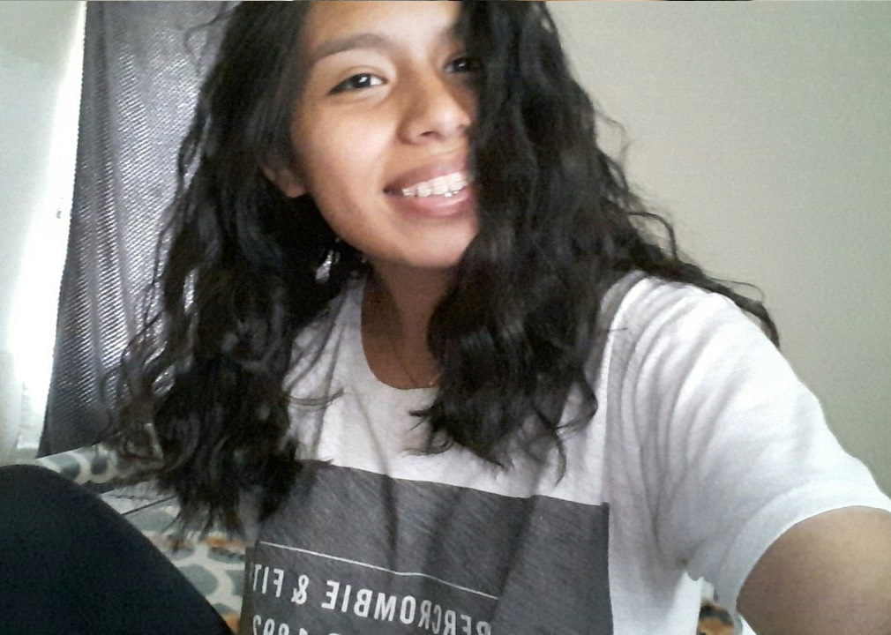

WHO WE ARE
We are a group of four girls who saw that there was a problem: In this day and age, there are so many charities and organizations dedicated to doing good that some with less honorable intentions have slipped themselves in with the mix. These organizations use only a tiny percent of all of their resources toward actually helping others. We believe that your donations matter and should not be wasted on extravagant vacations for charity CEOs. So we set out to making this site, The Homeless Helper, that helps with exactly that. Our hope is that after viewing this site, you never have to wonder again if you are actually making a difference.
MEET THE TEAM
Natalie Ulloa
Varsha Balaji
Ella Frantzen
Jennifer Adams
Hola mi nombre es Natalie y aquí hay un poco información de mi. A mi me gusta los perros pero desafortunadamente tengo alergias a ellos. También me gusta tocar el piano y violín.
I am currently a rising junior at High School South in West Windsor New Jersey. A few hobbies of mine are playing basketball, reading, and programming. I love math as well and I plan on majoring in Computer Science.
My name is Ella Frantzen. I am 16 and a junior at Episcopal School of Acadiana in Lafayette, LA. I play soccer for my high school and a nearby club. I have two dogs and a cat and my favorite desserts are s'mores and key-lime pie.
I am currently a student at Montgomery High School where I play soccer and run track. I am also a junior firefighter at my local firehouse. Additionally, my favorite subjects are math, science (especially physics), computer science, and graphic design.
CONTACT US
Have a question, comment, or complaint? Email the girls behind The Homeless Helper at thehomelesshelpergirls@gmail.com
We look forward to hearing from you!